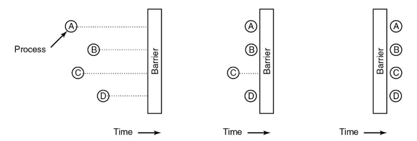
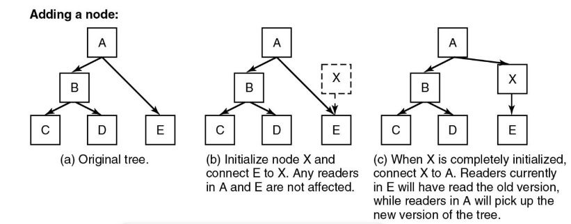
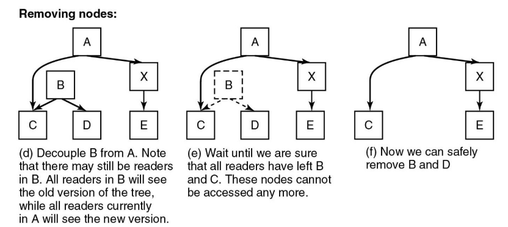

I MUTEX
cosa è?
Serve per la sincronizzazione e gestione di risorse tra thread ha due stati:
- bloccato
- sbloccato in teoria basterebbe una booleana ma si usa alcune volte
- bloccato
- sbloccato ci sono due principali procedure
- mutex_lock, quando un thread vuole accedere e bloccare una regione critica
- mutex_unlock, quando vuole sbloccare e uscire da una regione critica non è contemplato il concetto di
- quando un thread non può accedere a una regione critica con cede la cpu a un altro thread con
Considerazioni aggiuntive
- I mutex possono essere implementati nello spazio utente con istruzioni come
TSLoXCHG - Alcuni pacchetti di thread offrono
mutex_trylock, con cui si tenta di acquisire il lock o restituisce un errore, senza bloccare il processo corrente - i mutex sono efficaci quando i thread operano in uno spazio di indirizzi comune
- la condivisione di memoria tra i processi può essere gestita tramite kernel o con l’aiuto di sistemi operativi che permettono la condivisione di parti dello spazio degli indirizzi.
PTHREAD E MUTEX
Pthread è una libreria che ci consente di effettuare delle funzioni per sincronizzare i thread
pthread_mutex_init | Inizializza un oggetto mutex per l’uso, configurando le risorse necessarie. |
pthread_mutex_destroy | Distrugge un oggetto mutex, liberando le risorse associate. Deve essere chiamato solo se il mutex non è detenuto da alcun thread. |
pthread_mutex_lock | Blocca un mutex, sospendendo l’esecuzione del thread chiamante se il mutex è già occupato da un altro thread. |
pthread_mutex_trylock | Tenta di bloccare un mutex senza sospendere l’esecuzione. Se il mutex è già bloccato, la funzione restituisce immediatamente con un codice di errore specifico. |
pthread_mutex_unlock | Sblocca un mutex, permettendo ad altri thread di acquisirlo. Deve essere chiamato solo dal thread che detiene il lock. |
Lock vs Trylock
Uso quando il Thread deve assolutamente accedere alla regione critica, e se non riesce ad accedervi perché occupata si mette in attesa Uso quando il Thread se non entra nella regione critica con il mutex, va a fare altro. viene usato per controllare se il mutex è bloccato senza avere troppe conseguenze
- quando si entra nella zona critica si attiva il mutex e poi si entra
if (pthread_mutex_trylock(&mutex) == 0) {
// Se otteniamo il lock, eseguiamo le operazioni protette
printf("Ho ottenuto il lock e sto eseguendo operazioni.\n");
sleep(2); // Simuliamo qualche operazione lunga
printf("Ho terminato e rilascio il lock.\n");
// Rilasciamo il lock
pthread_mutex_unlock(&mutex);
} else {
// Se il lock non è disponibile, continuiamo con altre operazioni
printf("Non sono riuscito a ottenere il lock, continuo con altre
operazioni.\n");
}Semafori vs Mutex
- mutex
- viene usato per bloccare una determinata risorsa condivisa con la mutua esclusione(si/no)
- non viene usato per la sincronizzazione
- semaforo
- viene usato per bloccare una determinata risorsa condivisa
- viene usato per la sincronizzazione attraverso il decremento della variabile semaforo
- non ha semantica di proprietà quindi tutti possono andare a modificare la variabile del semaforo
cosa sono le variabili condizionali?
consente di sincronizzare l’accesso a una risorsa dai thread quindi se ad esempio ho un thread nella regione critica ma che deve aspettare del tempo senza fare nulla, possono nel frattempo entrare gli altri nella regione critica
Variabili condizionali
Come detto prima, il mutex da solo non può sincronizzare l’attesa su condizioni specifiche.
Per farlo utilizziamo le variabili condizionali (phtread_cond).
pthread_cond serve per mettere i thread in attesa di eventi specifici
- un thread produttore può notificare a un thread consumatore che è stato prodotto qualcosa di nuovo che può essere consumato
pthread_cond_wait()serve per mettere in attesa un thread rilasciando temporaneamente il mutexpthread_cond_signal()può servire ad esempio sei l produttore aggiunge un elemento al buffer e vuole risvegliare il consumatore
pthread_cond_init | Inizializza una variabile di condizione (pthread_cond_t) per consentire la sincronizzazione tra thread. La variabile di condizione viene associata a un mutex per coordinare l’accesso a risorse condivise. |
pthread_cond_destroy | Distrugge una variabile di condizione, liberando le risorse associate. Deve essere chiamata solo quando non ci sono thread in attesa sulla condizione. |
pthread_cond_wait | Blocca il thread chiamante in attesa della segnalazione di una condizione. Il thread deve detenere un lock sul mutex associato, che viene rilasciato automaticamente durante l’attesa e riacquisito al termine. |
pthread_cond_signal | Risveglia uno dei thread in attesa sulla variabile di condizione. Se nessun thread è in attesa, la segnalazione viene persa. Questo è utile per notificare il cambiamento di stato di una risorsa condivisa. |
pthread_cond_broadcast | Risveglia tutti i thread in attesa sulla variabile di condizione. Questo è utile quando un evento deve notificare più thread contemporaneamente, ad esempio, quando una risorsa diventa disponibile per tutti. |
SENZA pthread_cond_wait USI IL BUSY-WAITING
pthread_mutex_lock(&mutex);
while (buffer == 0) { // Controllo continuo della condizione (inefficiente)
pthread_mutex_unlock(&mutex);
usleep(1000); // Ritardo per ridurre il busy-waiting (non ottimale)
pthread_mutex_lock(&mutex);
}
consume(buffer);
pthread_mutex_unlock(&mutex);Il consumatore controlla continuamente buffer == 0, sprecando risorse CPU
CON pthread_cond_wait È TUTTO PIÙ BELLO
pthread_mutex_lock(&mutex);
while (buffer == 0) {
// Attesa passiva finché il buffer non è pieno
pthread_cond_wait(&cond, &mutex)
}
consume(buffer);
pthread_mutex_unlock(&mutex);Il consumatore si sospende senza consumare CPU finché il produttore non segnala (pthread_cond_signal) che il buffer non è più vuoto.
ESEMPIO DEL PROF
for (i = 1; i <= MAX; i++) {
pthread_mutex_lock(&the_mutex);
while (buffer != 0) {
pthread_cond_wait(&condp, &the_mutex);
}
// ... altre operazioni sulla risorsa condivisa ...
}la cosa particolare è pthread_cond_wait dove sostanzialmente viene
- messo in attesa il thread che la chiama
- lo fa uscire dal mutex
I MONITOR
il problema dei semafori e dei mutex è che non sono facili da implementare da parte di un programmatore Hansen e Hoare hanno introdotto i
- i monitor hanno lo scopo di semplificare l’implementazione dei concetti di sincronizzazione
- un monitor raggruppa le varie procedure, variabili e strutture dati
- i vari processi interagiscono con il monitor senza entrare nelle implementazioni interne e complesse di esso
- un processo per volta può accedere a un monitor
- i monitor proteggono i dati da eventuali problemi di concorrenza
Per gestire le situazioni in cui i processi devono attendere, i monitor utilizzano variabili condizionali e le operazioni di wait e signal.
- se un segnale viene inviato e non c’è nessuno in attesa il segnale viene perso
Linguaggi come
Javasupportano i monitor consentendo la programmazione concorrente attraverso metodi dichiarate comesynchronized
PSEUDOCODICE DI MONITOR PER PRODUTTORE-CONSUMATORE
torniamo a definire il problema produttore consumatore
monitor example
integer i;
condition c;
procedure producer();
...
end;
procedure consumer();
...
end;
end monitor;Monitor: Produttore-Consumatore
monitor ProdCons {
condition full, empty; // condizioni di buffer pieno e vuoto
int count = 0; // elementi presenti nel buffer
void enter(int item) { // PRODUTTORE
if (count == N) { // se il buffer è pieno
wait(full); // si mette in attesa di un signal(full)
}
insert_item(item); // inserisce l'item
count++; // incrementa il conteggio degli elementi
if (count == 1) { // se l'item inserito è il primo
signal(empty); // manda un segnale al consumatore
}
}
void remove(int *item) { // CONSUMATORE
if (count == 0) { // se il buffer è vuoto
wait(empty); // si mette in attesa di un signal(empty)
}
*item = remove_item(); // rimuove un item dal buffer
count--; // crescrementa il conteggio degli elementi
if (count == N-1) { // se ha rimosso un item
signal(full); // manda un segnale al produttore
}
}
}- questo codice definisce l’uso dei monitor
- e sono delle variabili condizionate che valgono tipo le usiamo per definire sei il buffer è libero o pieno
- contiamo gli elementi nel buffer per capire se è full o empty
- immette gli elementi li toglie
- pezzo di codice di
- se il contatore è uguale al massimo attiva la variabile condizionata come vera
- uscita dall’attesa mette la variabile nell’item
- aumenta count di 1
- se il count è uguale a 1 allora significa che sono il primo produttore a mettere qualcosa e devo segnalarlo
- pezzo di codice
- controllo se il contatore è zero, se è zero aspetto che diventi false
- se finisce il controllo noi rimuoviamo un elemento e lo salviamo nel puntatore
- scaliamo il contatore perché abbiamo tolto un elemento
- se il mio contatore è meno del massimo allora significa che non è più pieno e vado a modificare che servirà per il produttore
Funzione produttore
void producer() {
int item;
while (TRUE) {
item = produce_item();
ProdCons.enter(item);
}
}Funzione consumatore
void consumer() {
int item;
while (TRUE) {
ProdCons.remove(&item);
consume_item(item);
}
}sono codici che semplicemente attivano la funzione del monitor
- il produttore si salva da qualche parte il tutto
Differenze tra
sleep/wakeupewait/signal
sleep/wakeup
- meccanismi più primitivi con il problema della race condition (il processo A vuole svegliare B ma B sta già sotto le coperte)
wait/signal
- Sono protetti da mutua esclusione all’interno del monitor
- una volta che un processo/thread entra nella procedura attraverso il monitor ha l’esclusiva completa
MONITOR e SEMAFORI
I monitor sono costrutti di linguaggio, riconosciuto dal compilatore per garantire la mutua esclusione. Molti linguaggi come C e Pascal non hanno monitor o semafori (ma possono essere aggiunti attraverso routine in assembly).
I semafori sono pratici per risolvere la mutua esclusione in sistemi con memoria condivisa, ma non in sistemi distribuiti(client server).
CONCLUSIONE:
- SEMAFORI, basso livello
- MONITOR, limitati ai linguaggi che li supportano
SCAMBIO DI MESSAGGI
Lo scambio di messaggi è una tecnica di comunicazione tra processi che avviene usando due funzioni primitive:
sendreceiveÈ utilizzato in sistemi distribuiti ovvero sistemi che funzionano condividendo messaggi e non memoria
problemi noti
- perdita di pacchetti
- necessità di avere acknowledgment ovvero un meccanismo che conferma la ricezione del messaggio
- Autenticazione per identificare il mittente ei l destinatario
- denominazione dei processi, i processi che devono sapere a chi inviare e a chi ricevere
Scambio di messaggi: Produttore-Consumatore
Classico problema Produttore-Consumatore con messaggi e posti nel buffer condiviso
- il consumatore invia messaggi vuoti uno alla volta
- il produttore prende il messaggio vuoto e lo riempie poi lo invia
- il consumatore prende il messaggio lo svuota e lo rimanda il numero di messaggi rimane costante e garantisce efficienza di memoria condivisa
CODICE
PRODUTTORE
void producer() {
int item;
message msg;
while (TRUE) {
item = produce_item(); // produce l'item
receive(consumer, &msg); // riceve dal consumatore il messaggio (vuoto)
build_message(&msg, item); // costruisce il messaggio inserendo l'item
send(consumer, &msg); // invia al consumatore il messaggio (pieno)
}
}CONSUMATORE
#define N 100
void consumer() {
int item, i;
message msg;
for (i = 0; i < N; i++) {
send(producer, &msg); // invia al produttore un messaggio vuoto (per
// volta)
}
while (TRUE) {
receive(producer, &msg); // riceve dal produttore il messaggio (pieno)
item = extract_item(); // estrare l'item dal messaggio
send(producer, &msg); // riinvia al produttore il messaggio (vuoto)
consume_item(item); // consuma l'item
}
}
problematiche
- se il produttore è più veloce i messaggi saranno pieno e quindi dovrà aspettare chi li deve svuotare
- se il consumatore è più veloce dovrà aspettare chi li scrive
- se ci sono più macchine che si scambiano i messaggi allora dovrà esserci un sistema che identifica chi invia e chi riceve
soluzioni
- Ogni processo ha un indirizzo univoco che lo identifica
- Invece di inviare il messaggio direttamente al processo lo si invia a una Mailbox
- così il mittente può continuare a fare il suo lavoro senza dover aspettare il destinatario
BARRIERE
Le barriere sono utilizzate per sincronizzare i processi e per fare in modo che quando un processo raggiunge una barriera deve aspettare che tutti gli altri processi la raggiungano
- si utilizzano per fare calcoli paralleli 
INVERSIONE DI PRIORITÀ READ-COPY-UPDATE
IL MARS PATHFINDER
Il mars pathfinder su Marte usava un sistema operativo real-time con 3 attività
- attività ad alta priorità: analizzava dati scientifici importanti
- attività a media priorità: esegue le comunicazioni o altre operazioni
- attività a bassa priorità: Gestiva compiti meno importanti come la registrazione di diagnostiche
problema
- il thread di bassa priorità ha bloccato una risorsa con il mutex
- il thread di media priorità supera quello di bassa priorità lasciando il mutex ancora bloccato
- quello ad alta priorità se vuole fare qualcosa si trova con il mutex bloccato
quindi in poche parole le priorità non sono più quelle, perché quello ad alta priorità dovrebbe aspettare gli altri ma non è programmato per farlo e quindi si resetta
Questo caso viene descritto come inversione delle proprietà (in pratica sono tutte sballate).
SOLUZIONE
la NASA ha risolto il problema introducendo un protocollo di eredità delle priorità quando un thread ad alta priorità attende una risorsa bloccata, il sistema dà al thread che ha quella risorsa la priorità più alta così da sbloccarla
Una versione semplificata
IL PC È UNO SOLO
- Andrea (alta priorità) deve giocare a GOW
- Luca (bassa priorità) è nella lobby di fortnite
- Samuele (priorità media) sta vedendo un ep. di Blue Lock sul Tablet, ma sta continuamente interrompendo Luca chiedendogli di fargli vedere le skin che ha nel suo armadietto
RISULTATO:
- Luca non riesce ad uscire dal gioco
- Andrea, che avrebbe priorità alta, aspetta inutilmente
SOLUZIONE CON PROTOCOLLO DI EREDITÀ DELLE PRIORITÀ
- Quando Andrea aspetta Luca, Luca eredita temporaneamente la priorità di Andrea
- Luca può andare su
quitper poi uscire, ignorando completamente il povero Samuele che voleva solo vedere le skin 😔- Una volta uscito dal gioco, Luca torna alla sua priorità normale (godo coglione)
READ-COPY-UPDATE
l’idea è di separare lettori e scrittori attraverso un meccanismo che non li blocca ma li lascia lavorare senza interferirsi
- i lettori accedono ai dati senza lock senza avere inconsistenze perché la struttura è sempre completa
- la copia avviene quando uno scrittore deve modificare la struttura e la copia prima di modificarla così non interferiscono con i lettori
- update aggiorna la struttura sostituendo la vecchia con la nuova in determinati nodi ecc…
AGGIUNGERE UN NODO

- inizializzo X e connetto E a X così A e E che si leggevano insieme
- Quando ho finito di mettere roba in X lo metto tra A e E, quelli che prima stavano leggendo leggeranno per un po’ roba vecchia
TOGLIERE NODI

- aspettiamo che tutti i lettori smettano di leggere su B e C eliminando così il tutto
come capire quando una memoria è liberata dai lettori?
il GRACE PERIOD è un meccanismo utilizzato per determinare quanto una vecchia versione di dati può essere liberata in sicurezza
- si aspetta che tutti i lettori terminino
- durante questo periodo i thread lettori non si bloccano e non vanno in sleep